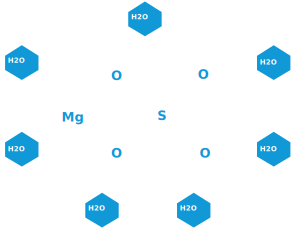

Twoja codzienna aktywność stała się jeszcze przyjemniejsza
Stosowany podczas Relaxu, Rehabilitacji, Leczenia, Treningu.
Siedmiowodny siarczan magnezu Iron Medi najlepiej stosować jako:
Peeling do ciała i twarzy (zalecany również do osób z trądzikiem)
Odrobinę soli zmieszać z olejkiem kokosowym lub szarym mydłem. Mieszankę wcierać w skórę i pozostawić na 10-15min, a następnie spłukać.
Łagodzenia ukąszeń komarów i innych insektów, oparzeń słonecznych, stanów zapalnych skóry oraz łuszczycy.
Należy rozpuścić 2 łyżki soli w szklance wody. Namoczyć gazę i stosować w formie okładów
Na zmęczone i opuchnięte stopy oraz stany grzybiczne z występującymi nieprzyjemnymi zapachami.
Należy szklankę soli rozpuścić w misce ciepłej wody i moczyć stopy przez 10-15min dziennie.
Kąpiele odprężające, rozluźniające w stanach bólowych i przeciążeniowych oraz przy przetrenowaniu mięśni.
Do wanny z bardzo ciepłą wodą wsypać 250-500g soli w zależności od przetrenowania i zmęczenia mięśni. Kąpiel powinna trwać ok. 15-20min. Po kąpieli nie spłukujemy ciała tylko czekamy do jego ostygnięcia i osuszamy ręcznikiem.
Roztwór do spryskania ciała. Stosujemy podczas wysiłku fizycznego, opalania oraz podczas seansów w saunie.
Należy wsypać do opryskiwacza 2 łyżki soli na szklankę gorącej wody. Ostudzić i opryskiwać bezpośrednio na ciało.
Cennik
Czm właściwie jest
Iron Medi?
Jest to środek pomocny podczas relaksu oraz w walce z dolegliwościami skórnymi, zapaleniach mięśni powstałych poprzez różne schorzenia, stany zapalne, przetrenowanie.
Iron Medi skada się w 99,5% z siarczanu magnezu siedmiowodnego, spotykanego również pod nazwą: sól gorzka, sól angielska bądź sól epsom.
